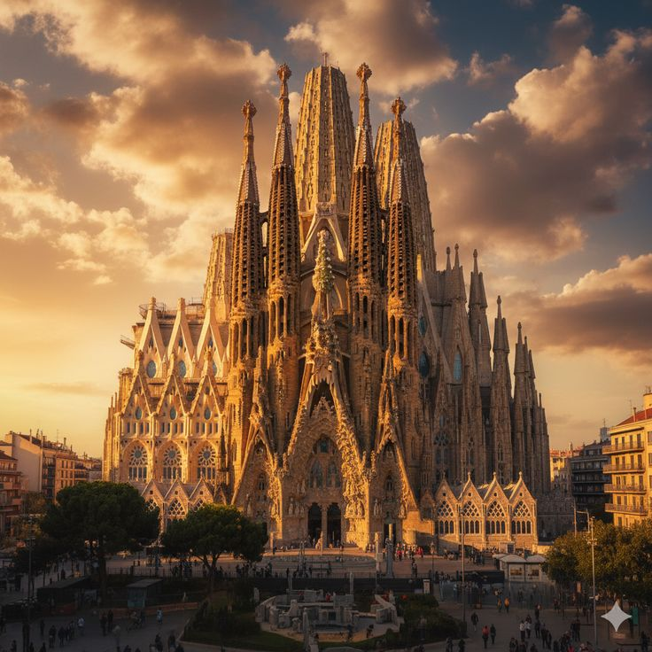
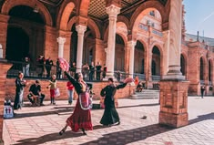
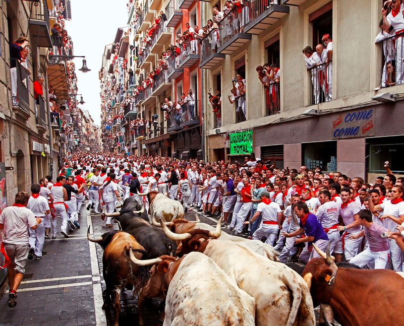

Cataluña
Столица Каталонии — Барселона. Здесь говорят на двух языках: испанском и каталанском. Регион известен архитектурой модерна и морским побережьем. Что стоит увидеть:
- Собор Саграда Фамилия
- Парк Гуэль
- Готический квартал
- Монастырь Монсеррат
- Набережная и пляжи Барселоны

La Sagrada Familia en el atardecer
|
Analucía
Андалусия — самый южный регион страны, родина фламенко и коррид. Здесь сохранилось много мавританской архитектуры. Главный город — Севилья.
Как провести день в Севилье:
- Утром посетите дворец Реал-Алькасар.
- Поднимитесь на башню Хиральда у Севильского собора.
- На обед попробуйте тапас в квартале Санта-Крус.
- После обеда прогуляйтесь по Площади Испании.
- Вечером сходите на выступление фламенко!

Flamenco - el alma de Andalucía
|
Navarra
Памплона — столица Наварры на севере Испании, город, который весь мир знает благодаря фестивалю Сан-Фермин и его знаменитым забегам с быками. Основные элементы этого праздника:
- Чупинасо — ракета 6 июля открывает праздник
- Энсьерро — забег с быками в 7:00
- Паñуэлико — красный платок
- Хемингуэй — «Фиеста» прославила город

San Fermín en Pamplona
|